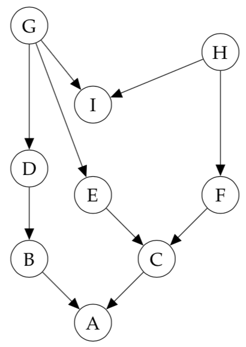
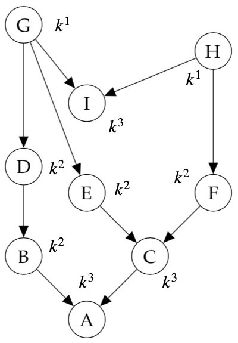
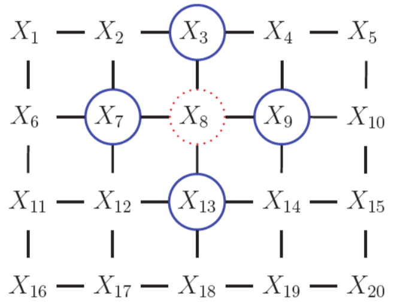

Sample Final¶
These are question pulled from the lecture, assignments and the sample midterm, alongside questions that were written based on the study guide. These were not given by an instructor and are merely guesses as to what kind of questions might be on the final.
Note
See the study guide here.
Week 1¶
Tutorial 1¶
Question 1¶
Recall that the definition of an exponential family model is:
where
- \eta are the parameters
- T(x) are the sufficient statistics
- h(x) is the base measure
- g(\eta) is the normalizing constant
Consider the univariate Gaussian, with mean \mu and precision \lambda = \frac{1}{\sigma^2}
What are \eta and T(x) for this distribution when represented in exponential family form?
ANSWER
Start by expanding the terms in the exponent
from here, we can rearrange the exponent into \eta^TT(x)
where
- \eta^T = \begin{bmatrix}\lambda u & -\frac{\lambda}{2} & \dotsc & \lambda u & -\frac{\lambda}{2}\end{bmatrix}
- T(x) = \begin{bmatrix}x_1 \\ x_1^2 \\ \vdots \\ x_N \\ x_N^2\end{bmatrix}
Week 2: Introduction to Probabilistic Models¶
Question 1¶
In this question, we'll fit a naive Bayes model to the MNIST digits using maximum likelihood. Naive Bayes defines the joint probability of the each datapoint x and its class label c as follows:
\begin{align} p(x, c | \theta, \pi) = p(c | \pi) p(x | c, \theta_c) = p(c | \pi) \prod_{d=1}^{784} p( x_d | c, \theta_{cd}) \end{align} For binary data, we can use the Bernoulli likelihood: \begin{align} p( x_d | c, \theta_{cd}) = Ber(x_d | \theta_{cd}) = \theta_{cd}^{x_d} ( 1 - \theta_{cd})^{(1 - x_d)} \end{align} Which is just a way of expressing that p(x_d = 1 | c, \theta_{cd}) = \theta_{cd}.
For p(c | \pi), we can just use a categorical distribution: \begin{align} p(c | \pi) = Cat(c|\pi) = \pi_c \end{align} Note that we need \sum_{i=0}^9 \pi_{i} = 1.
(a) Derive the maximum likelihood estimate (MLE) for the class-conditional pixel means \theta. Hint: We saw in lecture that MLE can be thought of as 'counts' for the data, so what should \hat \theta_{cd} be counting?
(b) Derive the maximum a posteriori (MAP) estimate for the class-conditional pixel means \theta, using a Beta(2, 2) prior on each \theta. Hint: it has a simple final form, and you can ignore the Beta normalizing constant.
ANSWER
(a) The maximum likelihood estimate of the class-conditional pixel means \theta for class c is given by
where N is the number of training examples. Taking the log, we get
where n_c^{d=1} is a vector of counts containing the number of training examples of class c where d=1 for each pixel dimension d in 784, n_c^{d=0} is the corresponding count vector for the number of training examples of class c where d = 0, and \cdot denotes the dot product. Taking the derivative of this expression and setting it to 0, we can solve for the MLE of the parameters
Rearranging, we get
therefore, the MLE for the class-conditional pixel means \theta of class c, \hat \theta_c, is given by the number of examples of class c where d=1 divided by the total number of examples of class c, as expected.
(b) The posterior probability of our class-conditional pixel means, \theta for class c is given by
\noindent where we have ignored the Beta normalizing constant. The MAP estimate of the class-conditional pixel means \theta for class c is given by
Taking the log, we get
taking the derivative of this expression and setting it to 0, we can solve for the MAP estimate of the parameters
Rearranging, we get
Week 3: Directed Graphical Models¶
Question 1¶
When we condition on y, are x and z independent?
(a)

(b)

(c)

ANSWER
(a)
From the graph, we get
which implies
\therefore P(z | x, y) = P(z | y) and so by \star\star, x \bot z | y.
(b)
From the graph, we get
which implies
\therefore P(x, z| y) = P(x|y)P(z|y) and so by \star, x \bot z | y.
(c)
From the graph, we get
which implies
\therefore P(z | x, y) \not = P(z|y) and so by \star\star, x \not \bot z | y.
In fact, x and z are marginally independent, but given y they are conditionally dependent. This important effect is called explaining away (Berkson’s paradox).
Example
Imaging flipping two coins independently, represented by events x and z. Furthermore, let y=1 if the coins come up the same and y=0 if they come up differently. Clearly, x and z are independent, but if I tell you y, they become coupled!
Question 2¶
(a) In the following graph, is x_1 \bot x_6 | \{x_2, x_3\}?

(b) In the following graph, is x_2 \bot x_3 | \{x_1, x_6\}?

ANSWER
(a) Yes, by the Bayes Balls algorithm.

(b) No, by the Bayes Balls algorithm.

Question 3¶
Consider the following directed graphical model:

(a) List all variables that are independent of A given evidence on B
(b) Write down the factorized normalized joint distribution that this graphical model represents.
(c) If each node is a single discrete random variable in {1, ..., K} how many distinct joint states can the model take? That is, how many different configurations can the variables in this model be set?
ANSWER
(a) By Bayes' Balls, no variables are conditionally independent of A given evidence on B.

(b)
(c) For each node (random variable) there is k states. There are k^n possible configurations where k is the number of states and n the number of nodes (x_{\pi_i})
Question 4¶
Consider the Hidden Markov Model

(a) Assume you are able to sample from these conditional distributions, i.e.
Write down a step-by-step process to produce a sample observation from this model, i.e. (x_1, x_2, x_3, ..., x_T) in terms of samples from the individual factors.
ANSWER
We want to sample a sequence of observations x_1, x_2, x_3, ..., x_T from the model according to
since observations x_t are independent of one another. Notice that this forms a chain, with probability
Step-by-step
- Start with t=1
- Sample z_t according to z_t \sim p(z_1) \prod_{i=t}^{t + 1} p(Z_i | z_{i-1})
- Given the sampled z_t, sample x_t according to x_t \sim \ p(X_t | z_t)
- Increment t by 1
- Repeat steps 2-4 until t=T
Week 4: Undirected Graphical Models¶
Question 1¶
(a) State the Global, Local and Pairwise Markov properties used to determine conditional independence in a undirected graphical model.
(b) Given the following UGMs:

use each to Markov property to give an example of two sets of conditionally independent nodes in the graph.
(c) Do the same for the following UGM:

ANSWER
(a)
def. Global Markov Property (G): X_A \bot X_B | X_C iff X_C separates X_A from X_B
def. Local Markov Property (Markov Blanket) (L): The set of nodes that renders a node t conditionally independent of all the other nodes in the graph
def. Pairwise (Markov) Property (P): The set of nodes that renders two nodes, s and t, conditionally independent of each other.
(b)
- Global: \{1, 2\} \bot \{6, 7\} | \{3, 4, 5\}
- Local: 1 \bot \text{rest} | \{2, 3\}
- Pairwise: 1 \bot 7 | \text{rest}
(c)
- Global: \{X_1, X_2\} \bot \{X_{15}, X_{20}\} | \{X_3, X_6, X_7\}
- Local: 1 \bot \text{rest} | \{X_2, X_6\}
- Pairwise: 1 \bot 20 | \text{rest}
Question 2¶
Given the following graph:
(a) What is a maximal clique? State one example from the graph.
(b) What is a maximum clique? State on example from the graph.
ANSWER
(a)
def. A maximal clique is a clique that cannot be extended by including one more adjacent vertex.
def. A maximum clique is a clique of the largest possible size in a given graph.
(b)
A maximal clique is show in blue, while a maximum clique is shown in green.

Question 3¶
Given the following graph:
(a) Write down the factorized joint distribution that this graphical model represents
ANSWER
(a)
Question 4¶
Compare and contrast directed vs undirected graphical models
| DGMs | UGMs | |
|---|---|---|
Week 5: Exact Inference¶
Question 1¶
Given the graph

(a) Suppose we want to compute the partition function (Z(\theta), see here) using the elimination ordering \prec= (1, 2, 3, 4, 5, 6). If we use the variable elimination algorithm, we will create new intermediate factors. What is the largest intermediate factor?
ANSWER
a) The size of the maximum factor is 3.
The set of potentials given by the graph is
and the joint probability is therefore
finally, the partition function with elimination ordering \prec= (1, 2, 3, 4, 5, 6) is given by
Carrying out the elimination, (not shown here), we get intermediate factors
\therefore the maximum factor is of size 3.
b) The only edge that does not already exist is the edge between X_2 and X_3 (added by intermediate factor \tau_1(x_2, x_3)). The largest maximal clique is now of size 3 (\{x_2, x_3, x_4\}).
(c)
The partition function with elimination ordering \prec= (4, 1, 2, 3, 5, 6) is given by
Carrying out the elimination, (not shown here), we get intermediate factors
\therefore the maximum factor is of size 4.
d) The added edges are between
- X_2 and X_3 (added by intermediate factors \tau_1(x_2, x_3, x_5) / \tau_2(x_2, x_3, x_5))
- X_2 and X_5 (added by intermediate factors \tau_1(x_2, x_3, x_5) / \tau_2(x_2, x_3, x_5))
- X_3 and X_5 (added by intermediate factors \tau_1(x_2, x_3, x_5) , \tau_2(x_2, x_3, x_5), \tau_3(x_3, x_5))
The largest maximal clique is now of size 4 (\{x_2, x_3, x_4, x_5\}).
Week 6¶
Week 8: Sampling and Monte Carlo Methods¶
Question 1¶
Given some data \{x^{(r)}\}^R_{r=1} \sim p(x), the simple Monte Carlo estimator is
(a) Show that this estimator is unbiased.
(b) Show that, as the number of samples of R increases, the variance of \hat \Phi will decrease proportional to \frac{1}{R}.
ANSWER
(a) To show that \hat \Phi is an unbiased estimator of \Phi we must show that for random samples \{x^{(r)}\}^R_{r=1} generated from p(x), the expectation of \hat \Phi is \Phi:
(b)
Question 2¶
Starting from \Phi = \int \phi(x)p(x)dx, derive the importance weighted estimator \hat \Phi_{iw} given
ANSWER
where \frac{Z_p}{Z_q} = \frac{1}{R}\sum_{r=1}^R \tilde w_r, w_r = \frac{\tilde w_r}{\sum_{r=1}^R \tilde w_r} and \hat \Phi_{iw} is our importance weighted estimator.
Week 9: Hidden Markov Models¶
Question 1¶
Assume x is a discrete random variable with k states. How many parameters are needed to parameterize
(a) x_t?
(b) A first-order Markov chain?
(c) An m-ordered Markov chain?
ANSWER
(a) k-1, as the last state is implicit.
(b) k(k-1), as we need k number of parameters for each parameter of x_t
(c) k^m(k-1), as we need k^m number of parameters for each parameter of x_t
Question 2¶
Say we have the following simple chain

where
- x_t \in [N, Z, A]
- z_t \in [H, S]
where our observed states are whether or not we are watching Netflix (N), sleeping (Z), or working on the assignment (A) and our hidden states are whether we are happy (H) or sad (S). Say futher that we are given the initial (\pi), transition (T), and emission probabilities (\varepsilon)
| \pi | |
|---|---|
| H | 0.70 |
| S | 0.30 |
| \varepsilon | N | Z | A |
|---|---|---|---|
| H | 0.40 | 0.50 | 0.10 |
| S | 0.10 | 0.30 | 0.60 |
| T | H | S |
|---|---|---|
| H | 0.80 | 0.20 |
| S | 0.10 | 0.90 |
Note
It is the rows of these tables that need to sum to 1, not the columns!
From these conditional probabilities, compute
- p(z_3 = H | z_1 = S) = ?
- p(x_3 = A | z_1 = S) = ?
ANSWER
and
Week 10: Stochastic Variational Inference / Automatic Differentiation Variation Inference (SAD VI)¶
Question 1¶
Starting from the Kullback–Leibler divergence (D_{KL}), derive the Evidence Lower Bound (ELBO) for a true distribution p_\theta (z | x) and approximate distribution q_\phi(z|x) and show that maximizing the ELBO is equivalent to minimizing D_{KL}(q_\phi (z | x) || p_\theta (z | x)).
ANSWER
Where \mathcal L(\theta, \phi ; x) is the ELBO. Rearranging,
because D_{KL}(q_\phi (z | x) || p_\theta (z | x)) \ge 0
\therefore maximizing the ELBO \Rightarrow minimizing D_{KL}(q_\phi (z | x) || p_\theta (z | x)).
Week 12¶
Question 1¶
Compare and contrast explicit vs. implicit density models.
ANSWER
Explicit density models define an explicit density function p_{model}\theta(x ; \theta). For these models, maximization of the likelihood function is straightforward: we simply plug the models definition of the density function into the expression for likelihood and follow the gradient uphill.
e.g. for the i.i.d case:
which is equivalent to the minimizing the KL divergence between P_{data}(x) and P_{model}(x ; \theta)
when p_{model}\theta(x ; \theta) is intractable, we use variational (e.g. VAEs) or MCMC approximations to compute the likelihood.
In contrast, implicit density models are trained without explicitly defining a density function. The way we interact P_{model} is through samples. An example is a General Adversarial Network (GAN).